欢迎使用Double Commander！
Double Commander - 是由俄罗斯程序员 亚历山大·科布洛夫 Alexander Koblov(Alexx2000@mail.ru)发起的一个项目，作为 Sexi Commander 的一个分支(作者 - 拉德克·切尔维卡 Radek Cervinka，(radek.cervinka@centrum.cz)
获取Double Commander有几种方法：
GitHub 上的发布页面。
SourceForge 上的发布页面。
Double Commander在许多 Linux 发行版的仓库和 FreeBSD Ports 集合中可用。
Double Commander 有自己的 仓库，适用于多个 Linux 发行版（Linux 发行版的官方仓库并不总是包含程序的当前（最新）版本）。
你可以自己构建Double Commander。
版本档案 也可用。
首先，您必须选择操作系统（Windows、Linux、macOS）、处理器架构，然后您可以选择要下载的版本。
对于 Windows，有一个可执行文件 .exe （Inno Setup）或 .msi ，以及一个归档文件 .zip （即所谓的便携版本）。
对于 Linux，有基于 GTK 工具包和基于 Qt 的版本。还提供可移植版本（使用 XZ 打包的编译二进制文件）和 AppImage 格式的文件。
在第一次启动时，Double Commander 将自动检测系统语言，并将其设置为界面语言。DC 已翻译成多种语言。可以通过菜单中的 配置 > 选项... > 语言 来更改语言。
Double Commander确定并使用当前系统主题。它看起来像这样（Ubuntu，三个主题和两个图标集）：
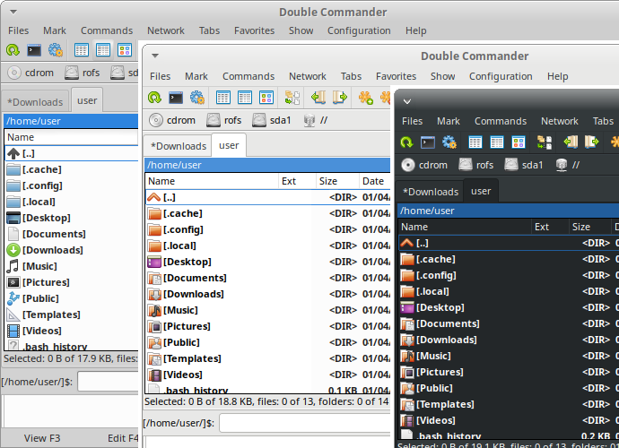
从图中可以看出，左侧是文件面板，中央是命令行，下方是日志查看器（显示文件管理器的所有操作）。Double Commander还支持 Windows 的暗黑模式（Windows 10 1809 及更新版本）。
Double Commander使用 Total Commander 插件 API，因此在 Windows 下您可以使用 Total Commander 的插件（其中许多与 DC 兼容）。请参阅插件设置部分中插件类型的描述。DC 附带了几个预安装插件，其他插件可以手动安装。
DC的界面。
此菜单包含几乎所有可以对文件执行的操作。请考虑所有项目：
创建符号链接...（内部命令 cm_SymLink ）。使用此项，Double Commander会在光标下的文件创建一个符号链接，并将其放置在对面面板中打开的文件夹中。
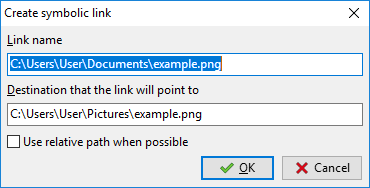
链接名称 – 这是链接及其名称的路径。名称是行中最后一个目录分隔符字符后的最后一个词。
链接指向的目标 – 创建链接的对象。
尽可能使用相对路径 – 如果可能，Double Commander将使用相对路径到对象目录。
创建硬链接...（内部命令 cm_HardLink ）。与上面的符号链接类似，但链接是硬链接，并且使用相对路径将不可用。
创建目录（内部命令 cm_MakeDir ）– 在当前目录中创建一个新的子目录。光标下的文件名（不带扩展名）或目录名将被提供，这对于创建多个相似名称的目录非常有用。您还可以在一次操作中创建多个子目录，只需用目录分隔符分隔子目录（在 Unix/Linux 系统中为“/”，在 Windows 中为“\”）。
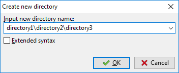
如果 扩展语法 被启用，<[] 模板可以用来插入当前日期/时间：在方括号内可以使用 日期和时间格式字符 以及任何允许用于文件名的字符。
创建快捷方式（仅限 Windows）– Double Commander 创建一个指向光标下文件的快捷方式（Microsoft Windows .lnk 文件），并将其放置在对面面板中打开的文件夹内。
更改属性... (内部命令 cm_SetFileProperties ) – 允许更改时间戳和属性（Windows）或文件权限（Linux 及其他类 Unix 系统），包括子文件夹或不包括。
显示文件属性...（内部命令 cm_FileProperties ）将显示默认的“属性”对话框（Windows）或 Double Commander 自己的对话框（Linux 和其他类 Unix 系统），如下所示：
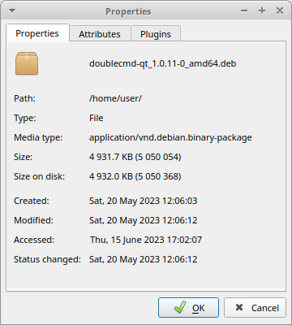 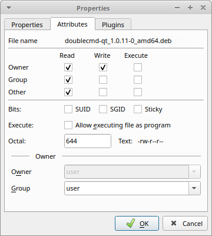 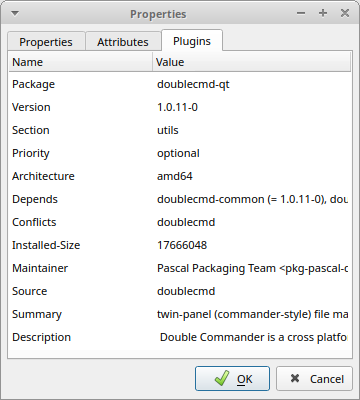
这表示文件或文件夹名称、MIME 类型、大小、写入和最后访问时间。对于链接，Double Commander 还将额外显示链接对象（符号链接）或它们的总数（硬链接）。在“属性”选项卡中，您可以更改文件的访问权限及其所有者（如果您有权这样做）。 “插件”选项卡是可选的，仅在您拥有合适的内容插件时可用（在这种情况下是 DEB）。另请参见 <SystemItemProperties> 的描述。
使用项目 编辑注释...（内部命令 cm_EditComment ），您可以创建或更改存储在文件 descript.ion 中的文件评论。支持 UTF、ISO、KOI 和 ANSI 编码。在 杂项 设置部分，您可以设置默认文本编码。
评论仅适用于本地文件系统上的普通文件，而不适用于远程或虚拟文件系统（例如，FTP 服务器、归档等）。为了让 Double Commander 在复制或移动文件时考虑到 descript.ion 的内容，请确保在 文件操作 设置部分中启用了 与文件/文件夹处理评论。
计算占用空间（内部命令 cm_CalculateSpace ）项计算所选对象的大小，以四舍五入的单位和字节为单位。
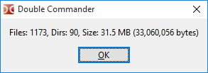
按内容比较 (内部命令 cm_CompareContents ) 显示一个包含两个面板的窗口，用于比较文件（通常是文本）。
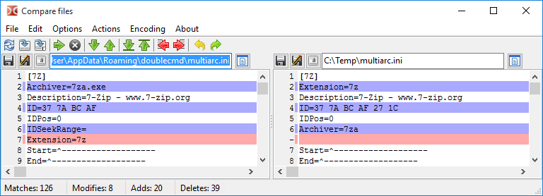
这是一个简单的视觉比较和合并工具，具有典型的功能：在差异之间导航（下一个、上一个、第一或最后），从右到左和从左到右复制文本块，就地编辑文件，撤销和重做最后的更改，以不同的名称保存等。
选项：
自动比较 – 在更改忽略空白和忽略大小写参数时自动进行比较。并且在选择新文件时也会如此。
忽略空白 – 如果启用，多个空格将被视为一个。
忽略大小写 – 如果启用，将不区分大写和小写。
行差异 – 如果启用，行内的差异也将显示。
二进制模式 – 结果以二进制形式呈现。
继续滚动 – 允许同步滚动（垂直和水平）。
所使用的颜色可以在颜色设置部分（差异类别）中更改。另请参见比较后框架面板的位置。
这两个文件将按如下方式选择
如果在活动面板中选择了两个文件，它们将会在比较工具中打开。第一个选择的文件将在比较工具的左侧面板中打开。
如果只选择了一个文件，它将与非活动面板中选择的文件进行比较。
如果只选择了一个文件，并且在非活动面板中没有选择任何内容，它将与第二个面板中具有相同名称的文件进行比较（如果存在），或者与光标下的文件进行比较。
如果没有选择任何内容，光标下的文件将与另一个面板中同名的文件进行比较（如果存在），或者与光标下的文件进行比较。
在工具 > 差异部分，您可以设置外部差异工具。
多重重命名工具（内部命令 cm_MultiRename ）
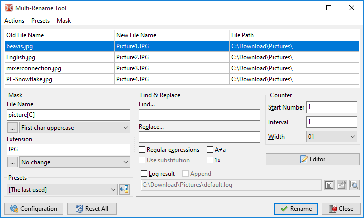
允许通过定义的掩码重命名任何文件。例如，一些不同名称的文件可以重命名为 Picture1、Picture2、Picture3 等。首先，选择要重命名的文件，然后启动此工具（见上图）。在这里，您可以看到文件的旧名称和新名称。有关详细描述，请参见 此页面。
通过选择项目 打包文件（内部命令 cm_PackFiles ），我们调用一个标准对话框来将文件打包为 zip、tar 和其他归档格式：支持的格式列表取决于添加的打包插件和外部归档工具（请参见 归档处理）。
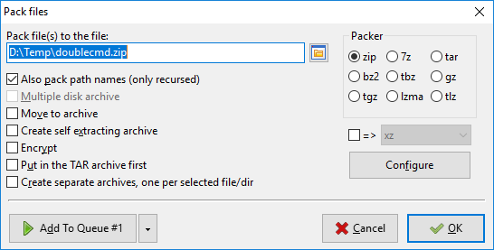
如果可用格式的列表太长而无法适应窗口，Double Commander 将把它们放入下拉菜单中（在这种情况下，请使用带有“=>”标签的复选框）。
我们还可以通过 提取文件 （内部命令 cm_ExtractFiles ）解压文件。当您从归档中复制文件时，会调用相同的对话框。
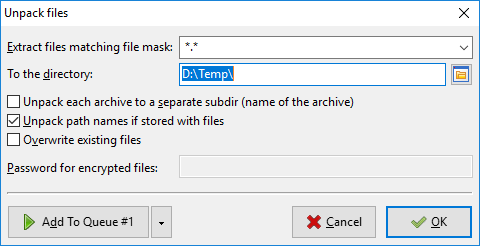
在提取匹配文件掩码的文件行中，您可以指定一个掩码，以确定将解压缩哪些文件。掩码的历史记录可以在下拉列表中找到。 下一行指定了目标目录（归档文件将被解压缩的位置）。可以手动更改或通过点击最右侧的浏览按钮进行更改。
将每个档案解压到一个单独的子目录（档案名称） – 如果选中，Double Commander将在目标目录中创建一个与档案同名的文件夹，并将文件提取到该文件夹中。您可以使用此选项一次提取多个档案，每个档案将被提取到目标目录中的其 own 文件夹中。未确定的复选框状态（三态）启用智能提取：如果档案根目录中有多个对象，则档案的内容将解压到一个与档案同名的文件夹中，但如果只有一个对象，则内容将按原样解压。默认情况下，它是未选中的，并且其状态不会在下次调用提取命令时保存。
如果与文件一起存储，则解压路径名 – 如果选中，将保留归档中的目录结构。否则，所有文件将被提取而不重新创建目录结构。
复选框 覆盖现有文件 禁用覆盖现有文件的确认。
测试档案 (内部命令 cm_TestArchive ) 将验证所选档案文件或光标下文件的内容完整性。如果档案内容损坏，将报告错误信息。支持的格式列表取决于添加的打包插件和外部归档工具。
项目 拆分文件 和 合并文件 （内部命令 cm_FileSpliter 和 cm_FileLinker ）
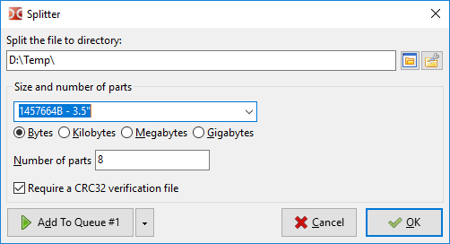
将文件拆分到目录 – 指定拆分文件的目标文件夹。默认情况下，将使用非活动文件面板的目录。
下一组参数允许选择分割部分的大小或数量。您可以输入自己的值或使用预设值之一：
1457664 B - 3.5" – 软盘驱动器 3.5;
98078 KB - ZIP 100 MB – ZIP 驱动器;
650 MB - CD 650 MB - CD 驱动器大小；
700 MB - CD 700 MB - CD 驱动器大小;
4482 MB - DVD+R - DVD 驱动器大小。
如果您使用 部件数量 参数，部件的大小将始终以字节为单位显示。
如果 启用 CRC32 验证文件，Double Commander将创建一个文本文件，文件名与源文件相同，扩展名为 ".crc"，该文件包含源文件的名称、大小和校验和（使用 CRC32 算法）。这是一种简单的方法来检查文件是否正确组合，以及在移动过程中其部分是否未被更改。如果该文件不可用，Double Commander将显示警告，但这不会阻止您获取原始文件（然而，在这种情况下，程序将无法添加原始文件扩展名）。
点击“确定”按钮后，您将在目标目录中获得多个文件。作为文件扩展名，Double Commander 使用三位或更多（如有需要）数字的顺序编号。要重新组合文件，请选择第一部分并点击 合并文件 ( cm_FileLinker )。或者选择所有部分，您还可以指定分割部分的顺序进行合并。
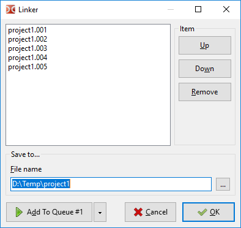
这个功能非常有用，如果你有小驱动器和大文件。可以移动文件部分。请记住，这个工具不创建任何特定的容器或归档，而只是分割或粘合文件，因此文件的部分可以被其他程序获取并安全地粘合在一起。
项目 计算校验和...（内部命令 cm_CheckSumCalc ）用于计算 校验和 以检查文件的完整性。以下校验和可用： BLAKE2（BLAKE2s、BLAKE2sp、BLAKE2b、BLAKE2bp）、BLAKE3、CRC32、HAVAL、MD4、MD5、RIPEMD128、RIPEMD160、SFV、SHA SHA2（摘要大小为 224、256、384 或 512 位）、SHA3（摘要大小为 224、256、384 或 512 位）、Tiger/192。
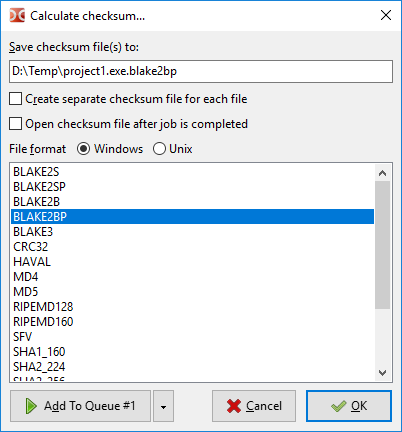
将校验和文件保存到： – 行指定计算出的校验和的名称和路径。
为每个文件创建单独的校验和文件 – 如果对多个文件计算校验和，此选项允许为每个目标文件创建单独的校验和文件。
文件格式 – 允许指定行结束类型和目录分隔符，而不是在 Windows（CRLF 和 "\"）和类 Unix 系统（LF 和 "/"）中常用的值。
选择您首选的校验和并 – 选择将计算校验和的算法。
项目 验证校验和... （内部命令 cm_CheckSumVerify ）将从光标下的校验和文件开始验证校验和列表。您也可以通过双击校验和文件（或使用 Enter 键）来运行此命令。
Double Commander可以逐个检查文件：选择文件，运行此命令，现在输入其校验和（或从剪贴板粘贴）并选择算法。
您可以使用由其他程序生成的校验和文件，但首先请确保Double Commander支持它们的算法和格式。
项目 清除（内部命令 cm_Wipe ）用于安全删除（默认快捷方式 Alt+Del ）：在从硬盘删除之前，所选文件将被重命名为随机名称，其内容将被覆盖三次（零、一次和随机数据）。您可以在 配置 > 选项... > 文件操作 中设置清除的遍数。目录和链接在删除之前将仅被重命名。
注意：固态硬盘的一些功能（垃圾回收、TRIM）显著增加了恢复已删除文件的难度或使其不可能，因此，在 SSD 上使用 cm_Wipe 命令可能是对设备资源的无意义浪费。
项目 删除（内部命令 cm_Delete ）– 将选定的文件或光标下的文件删除到回收站或永久删除。默认情况下，Double Commander 将文件移动到回收站，您可以在 配置 > 选项... > 文件操作 中更改此设置。删除到回收站可能在所有平台上不可用。
要删除归档中的文件（在这种情况下，文件将被直接删除），您需要添加合适的 WCX 插件或配置外部归档程序，同时归档格式必须支持删除操作。
项目 退出 (内部命令 cm_Exit ) – 关闭Double Commander。
该组中有一些命令可以让您以不同的方式选择文件。
第一个和第二个项目 选择一个组 和 取消选择一个组 （内部命令 cm_MarkPlus 和 cm_MarkMinus ）。这些命令通过掩码选择文件组。使用此掩码，您可以指定文件名或扩展名（您可以指定多个值，用分号“;”分隔，且不带空格）。例如，选择所有具有 .txt 扩展名的文件：
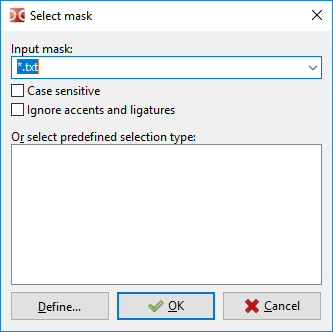
还有一个带有掩码历史的下拉列表。
第三和第四项 全选（内部命令 cm_MarkMarkAll ）和 全不选（内部命令 cm_MarkUnmarkAll ）。它们使得可以快速选择或取消选择面板中的所有项目。
第五项是 反选（内部命令 cm_MarkInvert ）。它使当前选中的文件变为未选中，反之亦然。
第六和第七项 选择所有相同扩展名的文件（内部命令 cm_MarkCurrentExtension ）和 取消选择所有相同扩展名的文件（内部命令 cm_UnmarkCurrentExtension ）。这些功能有助于选择和取消选择与光标下文件相同扩展名的文件。
第八和第九项 保存选择（内部命令 cm_SaveSelection ）和 恢复选择（内部命令 cm_RestoreSelection ）。第一个命令将把当前选定的项目保存在内部缓冲区中。然后，第二个命令可以用来重新选择之前选定的相同项目。
第十和第十一项 保存选择到文件（内部命令 cm_SaveSelectionToFile ）和 从文件加载选择（内部命令 cm_LoadSelectionFromFile ）。与之前的命令类似，但使用纯文本文件（每行一个文件名）。
第十二项是 从剪贴板加载选择（内部命令 cm_LoadSelectionFromClip ）。将根据剪贴板中的列表选择文件和文件夹（每行一个文件名）。
第十三和第十四项 复制文件名到剪贴板（内部命令 cm_CopyNamesToClip ）和 复制带完整路径的文件名（内部命令 cm_CopyFullNamesToClip ）。第一个命令将选定的文件列表复制到剪贴板，第二个命令也复制，但带有完整的文件路径。
第十五项是 复制所有显示的列（内部命令 cm_CopyFileDetailsToClip ）。将所选项目的文件信息复制到剪贴板：每个文件一行，列的内容将以制表符分隔。
最后一项是 比较目录（内部命令 cm_CompareDirectories ）。将选择在活动面板和非活动面板中不在对方面板中的项目（默认情况下只会选择文件）。具有相同名称的文件将按修改日期进行比较，之后将选择较新的文件。
第一个项目是 搜索（内部命令 cm_Search ）。该工具旨在根据指定的标准搜索文件和文件夹。也可以通过文件内容进行搜索。有关详细描述，请参见 此页面。
新的搜索实例...（内部命令 cm_AddNewSearch ）– 打开一个带有默认设置的搜索对话框的新实例。它还将允许在长时间搜索进行时启动一个新的搜索实例以搜索其他内容。
查看当前搜索实例（内部命令 cm_ViewSearches ）– 将显示一个窗口，列出搜索实例及其简要信息（状态、找到的文件数量、是否完成和文件掩码），并能够切换到其中一个实例。
第四项是 目录热列表（内部命令 cm_DirHotList ）。该命令与按下 "*" 按钮相同。
选择此项后，我们会弹出一个菜单，其中包含目录热列表，我们可以选择：
将活动框架的当前路径切换到您创建的列表中的预配置目录;
添加新书签：当前目录、选定目录（如有需要可选择多个）或光标下的目录；
配置现有书签。
请查看专门的 目录热名单 帮助页面，了解如何使用和配置它。
同步目录...（内部命令 cm_SyncDirs ）打开目录同步工具：左侧和右侧面板的目录将被扫描，您将看到它们内容的差异，并且可以使它们相同。
运行终端 (内部命令 cm_RunTerm ) 在当前目录打开一个终端 (设置在 工具)。
执行内部命令 (内部命令 cm_DoAnyCmCommand ) 打开一个窗口，列出所有内部命令及其描述。命令按类别分组，提供快速过滤和排序：您可以执行所选命令，复制其名称，或打开内部命令页面（某些命令支持参数）。
平面视图（内部命令 cm_FlatView ）将扫描面板的所有目录，以在一个面板中显示所有内容。
打开 VFS 列表（内部命令 cm_OpenVirtualFileSystemList ）将打开一个已添加的文件系统插件（WFX 插件）列表，这些插件使用自己的文件系统或提供对其他文件系统和设备（本地或远程）的访问。以及虚拟文件夹：
Computer – 包含一个正常磁盘的列表，带有驱动器字母，以及没有驱动器字母的设备（例如，通过 MTP 协议连接的 USB 设备，即智能手机、平板电脑或播放器）。仅限 Windows。
Linux – 您添加到 WSL 的所有 Linux 发行版及其根文件系统的列表（Windows 10 及更高版本）。
Network – 用于访问共享网络资源（仅限 Windows）。
Recycle Bin – 用于访问已删除到垃圾箱的文件。
（该列表按字母顺序排序，并依赖于系统和程序的语言设置。）
交换面板 (内部命令 cm_Exchange ) 交换左侧和右侧文件面板及所有打开的标签。
目标 = 源 (内部命令 cm_TargetEqualSource ) 在非活动文件面板中打开相同的目录。
显示占用空间 计算并显示当前目录下所有子文件夹中所有文件的总大小。活动面板的大小列中的文本被替换为总大小
网络连接 – 将打开已添加的文件系统插件（WFX 插件）列表，类似于“命令”菜单中的 打开 VFS 列表 命令。
网络断开 – 将关闭活动的网络连接。Double Commander将关闭以下连接之一（按优先级降序排列）：
在活动面板中打开；
在非活动面板中打开；
最后创建。
接下来的项目仅适用于 Windows。
映射网络驱动器 和 断开网络驱动器 – 将调用 Windows 系统对话框以连接和断开网络驱动器。
复制带有 UNC 路径的名称 – 将完整的网络文件名复制到剪贴板：服务器名称、共享名称和相对文件路径。
该组管理选项卡文件面板。
新标签页（内部命令 cm_NewTab ）– 在活动面板上添加一个新标签页（使用当前路径）并切换到它。
重命名标签（内部命令 cm_RenameTab ）– 允许更改当前标签的标题。
在新标签页中打开文件夹 (内部命令 cm_OpenDirInNewTab ) – 为光标下的目录打开一个新标签页，但不切换到该标签页（即在后台）。
关闭标签 (内部命令 cm_CloseTab ) – 关闭活动标签并切换面板到下一个标签（如果关闭最后一个标签，则切换到上一个标签）。
关闭所有标签页（内部命令 cm_CloseAllTabs ）– 关闭所有非活动标签页。如果它们包含锁定的标签页，将会提示确认。
关闭重复标签（内部命令 cm_CloseDuplicateTabs ）– Double Commander将检查打开的标签列表并关闭重复标签（每个面板单独处理！），只有第一个标签会被保留（从左侧开始计数）。
选项卡选项 – 使用此子菜单可以更改选项卡的状态：
正常 (内部命令 cm_SetTabOptionNormal ) – 将使选项卡变为正常：Double Commander 默认创建的常规选项卡。
锁定（内部命令 cm_SetTabOptionPathLocked ）– 使标签页锁定，尝试在此标签页内更改到另一个目录将提示在新标签页中打开。
锁定，允许更改文件夹（内部命令 cm_SetTabOptionPathResets ）– 如果您使用此方法锁定一个标签页，您可以在该标签页内更改到另一个目录，但在切换到另一个标签页后（或重新启动Double Commander），该标签页将恢复到锁定标签页的原始目录。
锁定，但在新标签中打开文件夹（内部命令 cm_SetTabOptionDirsInNewTab ）– 当您尝试进入面板中的任何目录时，该目录将会在新标签中打开。
此子菜单的其余项目将执行相同操作，但会同时作用于所有选项卡。
注意：默认情况下，Double Commander不允许在没有确认的情况下关闭锁定的标签（确认关闭锁定的标签 在 文件夹标签 设置部分）。
切换到下一个标签 (内部命令 cm_NextTab ) 和 切换到上一个标签 (内部命令 cm_PrevTab ) – 分别切换到右侧的标签（下一个）和左侧的标签（上一个）。
将标签保存到文件 (内部命令 cm_SaveTabs ) 和 从文件加载标签 (内部命令 cm_LoadTabs ) – 当前标签的名称及其相关目录可以保存在 .tab 文件中，并从该文件加载。
将当前标签页保存为新的收藏标签页 (内部命令 cm_SaveFavoriteTabs ) – 将当前打开的标签页保存到收藏标签页集合中。稍后，您可以通过下一个菜单项重新加载这些保存的设置。
从收藏标签加载标签 (内部命令 cm_LoadFavoriteTabs ) – 将显示一个弹出菜单，可以选择之前保存的标签集之一。
此菜单包含您保存的收藏标签列表以及一些与它们一起使用的命令。
收藏标签是根据您方便的标准（工作、项目、爱好等）分组的标签集合，它们允许您一次性在标签中打开所有必要的目录。
将当前标签页保存为新的收藏标签页 (内部命令 cm_SaveFavoriteTabs ) – 将当前打开的标签页保存到收藏标签页集合中。
在最后加载的收藏标签上重新保存 (内部命令 cm_ResaveFavoriteTabs ) – 将当前标签配置重新保存到最后加载的收藏标签条目上。
重新加载最后加载的收藏标签（内部命令 cm_ReloadFavoriteTabs ）– 再次重新加载最后加载的收藏标签设置，即此命令用于恢复保存的设置“原样”。
下一个项目 收藏标签的配置 是快速跳转到 收藏标签 设置部分。
要卸载最后加载的收藏标签，请使用 cm_LoadFavoriteTabs 命令并设置 setup=""（将按钮添加到工具栏或设置热键）。当前打开的标签不会受到影响，此命令只会从内存中卸载所使用的收藏标签集的名称，Double Commander将继续正常工作。
管理文件面板中显示的内容。
前三个项目允许切换文件列表的视图：简洁视图（内部命令 cm_BriefView ）、完整视图（内部命令 cm_ColumnsView ）和缩略图（内部命令 cm_ThumbnailsView ）。有关详细信息，请参见下方。
快速查看面板（内部命令 cm_QuickView ）– 在查看程序中打开文件，但所选项目的内容显示在相对面板中（而不是单独的窗口）。更多详细信息请见这里。
树视图面板（内部命令 cm_TreeView ）– 显示活动文件面板的目录树。内部命令 cm_FocusTreeView 切换当前文件列表和树之间的焦点（默认快捷键 Shift+Tab ）。
接下来的五个项目： 按名称排序（内部命令 cm_SortByName ）， 按扩展名排序（内部命令 cm_SortByExt ）， 按大小排序（内部命令 cm_SortBySize ）， 按日期排序（内部命令 cm_SortByDate ）， 按属性排序（内部命令 cm_SortByAttr ）– 允许选择文件的不同排序方式。您还可以单击列标题的左鼠标按钮来更改排序顺序。
反向排序（内部命令 cm_ReverseOrder ）– 反转活动面板的排序顺序。
刷新（内部命令 cm_Refresh ）– Double Commander将重新读取活动面板中目录的内容。
显示隐藏/系统文件（内部命令 cm_ShowSysFiles ）– 控制显示具有“隐藏”或“系统”属性的文件和文件夹（Windows）或名称以点字符开头的文件（Linux 和其他类 Unix 系统）。与配置中的设置相同 – 显示系统和隐藏文件。
水平面板模式（内部命令 cm_HorizontalFilePanels ）– 设置文件面板的位置：两个垂直面板排列在左/右或两个水平面板排列在上/下。
操作查看器（内部命令 cm_OperationsViewer ）– 显示一个包含文件操作列表的窗口。您可以更改队列中操作的顺序，停止或暂停任务。
第一个项目是 选项（内部命令 cm_Options ），它打开“选项”窗口，详细信息请参见 专用帮助页面。
其他项目：快速跳转到某些设置部分 （目录热列表， 收藏标签， 文件关联， 文件夹标签和 归档工具） 以及命令保存位置和保存设置。
在这里您可以获取帮助信息（本文档）和有关程序的信息：
帮助 – 打开帮助索引页面。
热键列表 – 打开键盘快捷键页面。
访问Double Commander网页 – 如果您在线，请访问项目主页。
关于 – 显示有关程序版本和开发者的信息。

工具栏上有按钮用于执行内部命令和启动我们的应用程序。
默认配置被提议，但我们肯定会根据各自的需求进行配置，因为这可能是Double Commander中最可配置的部分。
这就是为什么专门为此创建了一个页面，您可以在此链接下找到。

驱动器按钮栏帮助您通过一次鼠标点击快速更改驱动器。中间鼠标（鼠标滚轮）点击将在活动面板中以新标签页打开磁盘。
右键单击会显示包含挂载/卸载、格式化等操作的上下文菜单（取决于操作系统和驱动器类型）。
最后一个按钮是 打开 VFS 列表。
帮助更改驱动器，还包含额外信息（大小、可用空间）和导航按钮 – « * \ .. ~ < » 。
内部命令是 cm_LeftOpenDrives 用于左侧面板， cm_RightOpenDrives 用于右侧面板。默认快捷键： Alt+F1 和 Alt+F2 ，但它们在大多数 Linux 桌面环境中无法使用（只需打开 按键 >热键 设置部分并替换它们）。
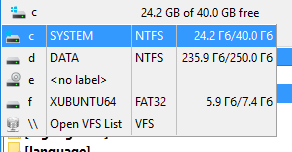
内部命令 cm_SrcOpenDrives 将为活动面板显示此菜单。
额外的导航按钮：
"*" – 显示书签热列表，详细信息请参见专门的 目录热列表 帮助页面；
"\" 或 "/" – 转到当前驱动器的根目录（Windows）或文件系统根目录（Linux 和其他类 Unix 系统）。例外情况：
".." – 返回上级目录;
"~" – 转到您的主目录；
"<" 和 ">" – 命令 cm_LeftEqualRight 和 cm_RightEqualLeft。

显示标签。使用左键单击标签，或者可以使用键盘导航标签（默认情况下为 Ctrl+Tab 和 Ctrl+Shift+Tab ）。要更改标签的顺序，请使用拖放或 cm_MoveTabLeft 和 cm_MoveTabRight 命令。
您可以保护标签页不被关闭或更改目录，可用的标签页状态在"标签"子部分中描述。锁定的标签页用星号标记（如果启用带星号的锁定标签页 *）。
显示在文件面板中打开的目录。
在这个目录栏上左键单击会下拉一个目录历史（内部命令 cm_DirHistory ），允许快速返回到之前的目录：
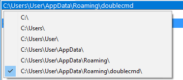
在目录栏上右键单击将允许您将路径复制到剪贴板或手动输入新路径。您可以使用键盘代替鼠标，只需为cm_EditPath命令设置一个热键。支持环境变量，在类 Unix 操作系统中，您还可以使用波浪号“~”来表示当前用户的主目录。
双击或中间鼠标点击可以下拉目录热列表。
现在也可以点击目录栏的部分内容，以快速在目录结构中导航回去。如果您想返回多个级别的父目录，这非常方便。这被称为“面包屑”导航功能。
显示列名。左键单击 排序 文件按列。标题文本左侧的小箭头显示排序方向。您还可以通过按住 Ctrl 键的同时单击标题来设置多个列的排序顺序。例如，尝试按扩展名排序文件，现在按住 Ctrl 键单击“日期”标题：每种文件类型将独立于其他类型按日期排序。
选项卡标题栏允许使用鼠标更改列的宽度，默认情况下，DC 会为两个面板更改它并保存一个新值以供下次启动时使用（请参见 <AutoSaveWidth>）。
右键单击会显示一个菜单，用于更改和编辑自定义列样式设置。
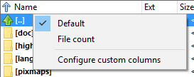
默认，文件数量 – 现有样式。
配置自定义列 – 打开 文件视图 > 列 > 自定义列 部分。
文件面板显示当前目录中文件的名称。Double Commander可以将文件面板垂直排列（左/右，默认）或水平排列（上/下），使用显示菜单中的水平面板模式项或 Ctrl+Shift+H 。
默认情况下，两个面板的宽度是相同的。左侧（或顶部）面板的大小设置为百分比，有几种方法可以更改它：只需用鼠标拖动面板分隔符（程序将在工具提示中显示左侧面板的宽度），使用右键菜单中的固定大小比例（20/80、30/70、40/60、50/50、60/40、70/30、80/20）或cm_PanelsSplitterPerPos命令。
文件面板内容显示的一般参数收集在文件视图和文件视图扩展设置部分。
可用几种文件列表视图模式。
完整 – 每行一个文件，带有默认或用户定义的列。Double Commander 显示文件夹和链接的大小为 <DIR> 和 <LNK> 。选项可在 列 设置部分中找到，您可以在 自定义列 部分添加或更改列集。列视图在大多数插图中使用。
简要视图 – 仅文件名称。如果可能，显示多个列。选项可在文件视图 > 简要设置部分中找到。
缩略图 – 以小图像形式显示的文件。如果可能，使用多于一列。您可以在杂项设置部分更改缩略图的大小。

Double Commander可以利用操作系统的功能来创建缩略图或自行创建缩略图。您可以选择允许将缩略图缓存保存到磁盘，或仅在程序关闭之前将其保留在内存中（请参见 杂项）。
创建缩略图的方法和支持的文件格式取决于操作系统的家族。
Windows：Double Commander利用操作系统的功能（如在 Windows 资源管理器中），WLX 插件支持缩略图创建，并补充了由内置查看器支持的图像格式列表。
macOS：Double Commander利用操作系统的功能（快速查看），并补充了由内置查看器支持的图像格式列表。该程序还支持 OpenDocument 格式（.odt，.ods，.odp，.odg），并将在使用快速查看 API 之前尝试创建缩略图（如果文件包含“Thumbnails/thumbnail.png”）。
Linux 和其他类 Unix 系统：Double Commander 为以下格式创建缩略图：
支持的图像格式有 内置查看器;
XCF 图像格式（如果可用 ImageMagick 库）；
一些流行的视频格式（如果可用 FFmpegthumbnailer 库）：.avi, .flv, .mkv, .mov, .mp4, .mpeg, .mpg, .vob, .webm, .wmv;
MP3 文件的嵌入封面艺术;
开放文档格式（如果文件包含“Thumbnails/thumbnail.png”）：.odt, .ods, .odp, .odg。
Double Commander还为文本文件（纯文本和其他非二进制文件）创建缩略图。这些文件的缩略图不会保存到磁盘。
Double Commander可以在文件名左侧显示文件图标（默认启用），这些图标显示文件类型和与程序的关联（系统或内部）。DC 使用来自其自身图标主题和/或根据系统设置的图标（请参见图标设置部分）。
该程序还允许指定文件类型，其名称应为不同颜色，请参阅颜色 > 文件类型设置部分以获取更多详细信息。
当前文件将被一个细矩形包围，带有或不带有颜色填充，所选文件的名称将以红色显示。您可以在颜色 > 文件面板设置部分更改使用的颜色和光标的外观。
Double Commander在鼠标光标悬停在文件上时可以显示工具提示，详细信息请参见工具提示设置部分。
有几种方法可以选择文件。
要选择光标下的文件或目录，只需按 Insert 键（选择后，Double Commander会自动将光标移动到下一个文件）或 Space 键。如果您使用 Space 键选择一个目录，程序将计算该目录的总大小并在相应的列中显示。
您可以 选择 左键或右键来选择文件：
左键 – 鼠标的工作方式与 Windows 资源管理器相同，右键仅用于打开上下文菜单。在此模式下，您可以通过单击任何未选中文件的名称或“..”项来取消选择所有已选文件。您还可以使用相应的内部命令（见下文）。
右键 – 左键的功能相同，右键可以通过点击文件名来选择文件。稍微长时间按住右键将调用文件的上下文菜单。要选择多个连续的文件，可以按住右键并将鼠标光标移动到文件列表上。要取消选择所有已选择的文件，可以使用相应的内部命令（见下文）。
您可以使用带有修饰键的鼠标点击： Ctrl （在列表中的任何位置选择下一个文件）和 Shift （将几个连续的文件添加到选择中）。要选择几个连续的文件，您可以按住 Shift 并使用上下键。
也可以通过点击文件图标来选择文件，您可以在鼠标设置部分启用此功能。同时，双重指挥器会将光标移动到所选文件，就像使用 Ctrl 键进行鼠标点击一样。在缩略图视图中，当您点击图像的左侧部分（1/4 或 25%）时，这种方式有效，因此您可以通过点击右侧图像部分而不进行选择来设置光标。此功能在取消选择大量文件时非常方便：点击任何已选文件的图标，然后点击其名称。
您可以完全禁用鼠标选择：左键仅用于设置光标，右键将调用上下文菜单。
特殊 命令 可用于选择和取消选择文件，允许使用不同的条件：按名称或名称的一部分、文件类型、属性等。其中一些已添加到 标记 菜单中，您可以 分配热键 或将按钮添加到 工具栏。或者打开一个窗口，列出所有内部命令及其描述（默认内部命令 cm_DoAnyCmCommand ， Shift+F12 ），并转到 标记 类别。
Double Commander支持使用鼠标拖放文件的功能（即按住左键）到外部应用程序的窗口（例如，文本或图形编辑器或查看器）、工具栏以及在目录之间复制/移动文件。如果该操作可行，鼠标光标附近将显示“+”符号。
当将文件拖到工具栏的空白处时，将创建一个带有外部命令的按钮，传递的文件将用作命令。只有当按钮是带有外部命令的按钮时，才能将文件拖到按钮上：命令将被启动，文件将作为启动参数传递给它。
对于文件复制或移动（使用 Ctrl 或 Shift 键）操作，以下目标是可能的：对面的文件面板、活动或非活动面板中的任何文件夹（文件夹名称将用框突出显示）、任何打开标签的目录（只需将文件拖放到所需标签的标题上）。使用“..”将文件复制到父目录。如果支持添加文件，Double Commander 还可以将文件复制到归档中。
使用右键拖动将显示包含以下操作的菜单：复制、移动、创建链接（硬链接）、创建符号链接和取消。如果选择了多个文件，Double Commander 只会为列表中的第一个文件提供创建链接的选项。
您可以使用 Ctrl+Shift 创建符号链接。
当您将文件拖动到另一个应用程序的窗口时，Double Commander 使用系统实现的拖放功能。使用 Alt 键，您可以调用替代操作（例如，当将文件拖入 Windows 资源管理器窗口时，将创建一个快捷方式，而不是复制文件）。
文件的上下文菜单（右键菜单）的外观和内容取决于操作系统的家族。在 Windows 中，Double Commander使用系统上下文菜单（如在 Windows 资源管理器中）以及“操作”子菜单（见下文），而在其他操作系统中，Double Commander创建自己的上下文菜单，包含典型操作。如果您更喜欢使用右键选择模式，则需要稍微长时间按住右键才能调用此菜单。您可以使用内部命令 cm_ContextMenu 来调用上下文菜单（默认情况下为 Shift+F10 ）。
Double Commander在 Linux 和其他类 Unix 系统中的上下文菜单：
打开 – 在默认程序中打开光标下的文件（将使用系统文件关联）。
打开方式子菜单 - 包含适合打开文件的应用程序列表。在 macOS 中，Double Commander 使用 Launch Services API 获取该列表，在其他系统中，该程序遵循桌面菜单规范。
额外项目 其他...
macOS：将打开所有已安装应用程序的列表。
Linux 和其他类 Unix 系统：将打开应用程序选择窗口，您可以从所有可用应用程序的列表中选择一个应用程序，或手动指定命令行以打开文件。在这里，您还可以为文件类型保存额外的系统关联，添加一个新关联或更改默认应用程序（Double Commander将使用 ~/.config/mimeapps.list 文件（请参见 MIME 类型与应用程序之间的关联）。
服务 – 仅限 macOS，类似于“服务”系统子菜单。
分享... – 仅限 macOS，是“分享”系统子菜单的类似功能。
在这里打包... – 调用 打包命令 选定的文件，当前目录将用作目标目录。
在此提取... – 调用 解压命令 以解压所选文件，当前目录将用作目标目录。仅当在归档插件或外部归档程序的设置中指定了文件扩展名时，此项才会被添加。
调用基本文件操作：移动 ( F6 ), 复制 ( F5 ), 删除 ( F8 ), 重命名 ( F2 )。
使用剪贴板复制和移动文件的命令：剪切，复制，粘贴
显示文件属性 – 显示 文件属性窗口。
在 Linux 和其他类 Unix 系统的文件面板中，右键单击空白区域会弹出一个菜单，菜单项包括：
刷新 – 重新读取面板中目录内容的命令。
排序方式子菜单 - 包含用于切换排序方法的命令：按名称、文件扩展名、大小、修改日期或属性。还添加了反向排序命令，用于切换排序方向。
粘贴 – 用于通过剪贴板复制和移动文件。
新子菜单 - 包含创建目录 ( F7 ) 和文本文件 ( Shift+F4 ) 的命令。此外，如果系统模板目录存在且不为空（在 macOS 中不可用），此子菜单还包含新文件的模板。
显示文件属性 – 显示当前目录的 属性窗口。
在打开的归档或文件系统插件（WFX）内的上下文菜单始终相同，并不依赖于操作系统
打开 – 在默认程序中打开文件，就像双击或按 Enter 一样 (内部 和系统文件关联将被使用)。默认情况下，在压缩文件内，此命令将显示打包文件的属性窗口（请参见 压缩文件处理），您可以选择在关联程序中打开文件，但Double Commander允许直接配置在关联程序中自动打开文件（使用 <AutoExtractOpenMask>）。
查看 – 在查看器中打开文件 ( F3 )。
调用多个文件操作：复制 ( F5 )、重命名 ( F2 ) 和 删除 ( F8 )。
显示文件属性 – 显示文件属性窗口。内容取决于虚拟文件系统的功能。在归档文件内，这将是压缩文件的属性窗口（见 归档处理）。
请记住，并非所有菜单项在每种情况下都有效。例如，如果某些归档格式不支持删除文件，Double Commander将忽略删除命令的选择。
在使用快速搜索/过滤工具时，其面板显示在文件面板的底部。快速搜索用于在当前文件面板的内容中进行搜索：光标将移动到最近的匹配文件，当使用 up arrow 和 down arrow 键时，程序将仅在文件名符合条件的文件上循环移动光标。快速过滤将隐藏所有不符合条件的文件名（要重置过滤器，请使用 Esc 键或“X”按钮）。
Double Commander支持拼音（程序目录中的 pinyin.tbl 文件将被使用）。
您可以在键设置部分中设置快速搜索/过滤面板的调用方式，或使用cm_QuickSearch和cm_QuickFilter命令。
在快速搜索面板中更改的所有参数将在下次快速搜索/过滤调用时保留（在关闭程序之前），您可以在快速搜索/过滤设置部分更改它和默认值。
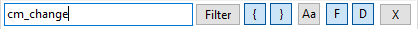
过滤器 – 搜索/过滤切换;
{ – 名称必须以输入的第一个字符开始;
} – 输入的点“.”之前的最后字符必须匹配；
Aa – 区分大小写;
F – 过滤文件;
D – 过滤目录;
X – 禁用快速搜索并关闭面板。
显示文件面板内容的一些细节。
如果设置为列视图，状态栏将显示所选文件的大小和数量，以及面板中所有文件的总数量和总大小。
如果设置了简要视图或缩略图视图，光标下的文件名、文件大小、修改日期和属性将在此处显示。如果选择了文件，状态栏将显示与列视图相同的信息。
如果启用了扁平视图（没有子目录），则光标下的文件名将以相对路径显示在这里。如果选择了文件，状态栏将显示与列视图相同的信息。
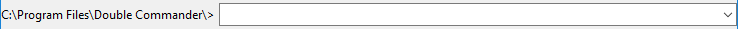
用于手动输入命令，您可以快速运行或打开当前目录或 PATH 中的文件（如有必要，可附加参数）。
活动目录的路径在行首显示（ C:\Program Files\Double Commander\ 在截图中）。右侧带箭头的按钮打开输入命令的历史记录。使用 Shift+Del 来删除历史记录中不必要的条目。
几个内部命令可用于命令行操作，另请参阅自定义热键设置部分中的输入选项。
如果命令行在设置中被隐藏，您仍然可以使用它。在这种情况下，命令运行后命令行将自动隐藏。您可以使用 Esc 键（如果输入框为空）来隐藏它，或者只需将光标移动到文件面板（或以其他方式切换焦点）。
环境变量是被支持的，在类 Unix 操作系统中，您还可以使用波浪号“~”来表示当前用户的主目录。
Double Commander独立处理“cd”命令，您可以使用它在活动面板中更改当前目录。如果您使用带有文件名的路径，Double Commander将更改目录并将光标放在该文件上。如果您仅指定文件名，Double Commander将在当前目录中将光标放在该文件上。
您可以使用斜杠：cd \ 进入当前驱动器的根目录（Windows），使用 cd / 进入文件系统的根目录（Linux 和其他类 Unix 系统）。
在 Windows 中，您可以通过简单地指定驱动器字母和冒号来更改驱动器：c:、d:等。
右键单击将显示包含标准命令的常用输入框菜单 剪切、复制、粘贴、删除、全选 和子菜单 插入 Unicode 控制字符。
显示 F3 - F9 热键。使您能够通过鼠标点击选择命令。
由 Rustem 创建 (dok_rust@bk.ru)
罗德·J（rodmac_shiels@hotmail.com）英文版